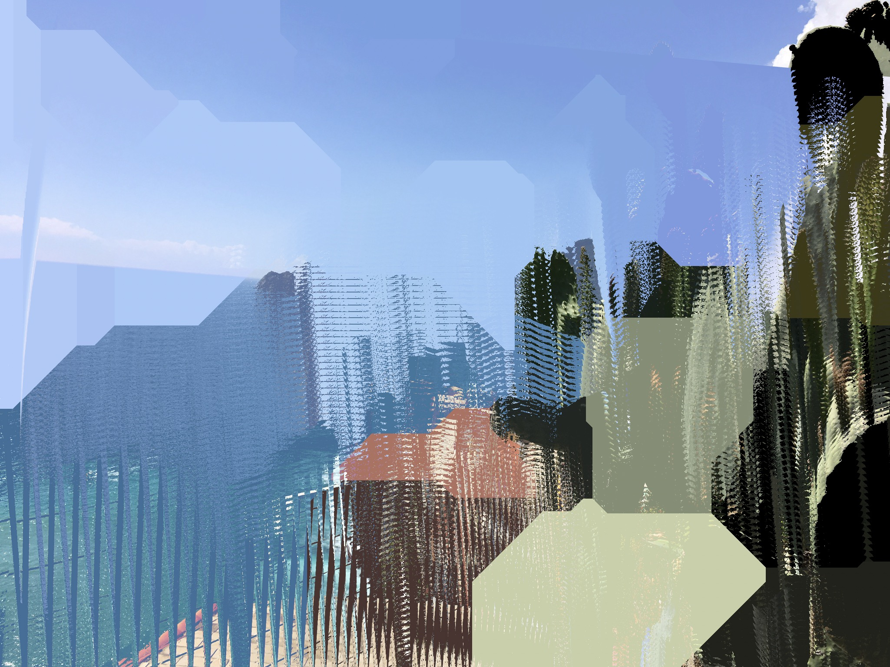
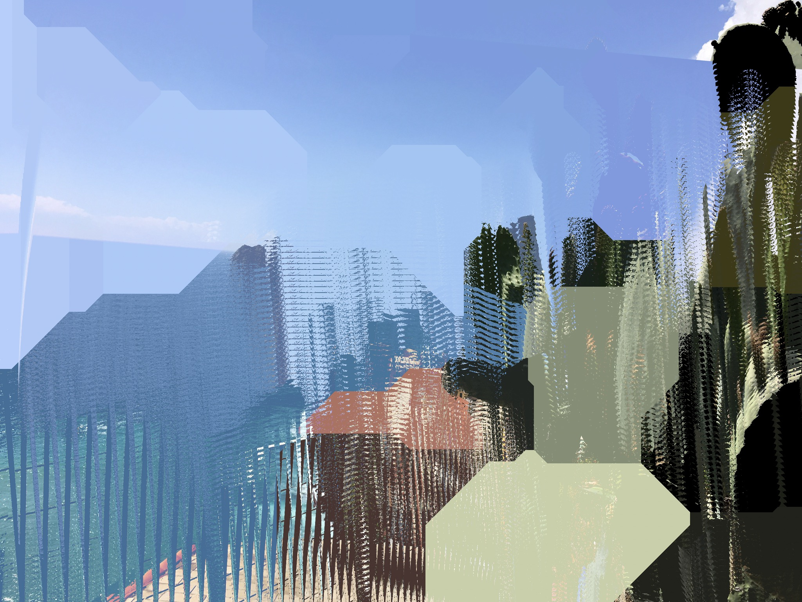

Zine
by bryceb
@releaf.bryce Shoal Creek and Austin Public Library
‚ô¨ original sound - ReLeaf üçÉ Bryce
W.A.S.T.E.: Words Assisting Sustainable Transformation & Ecology
|  |
@releaf.bryce Shoal Creek and Austin Public Library
‚ô¨ original sound - ReLeaf üçÉ Bryce
|  |